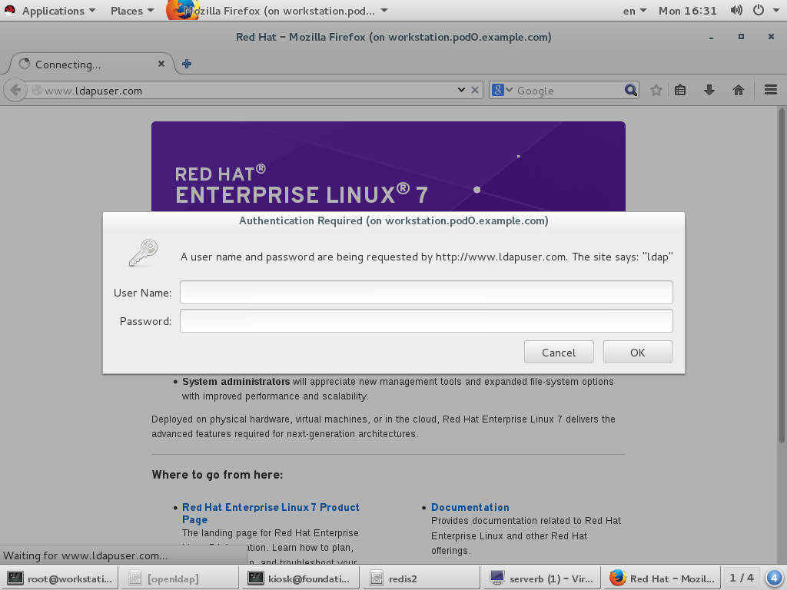
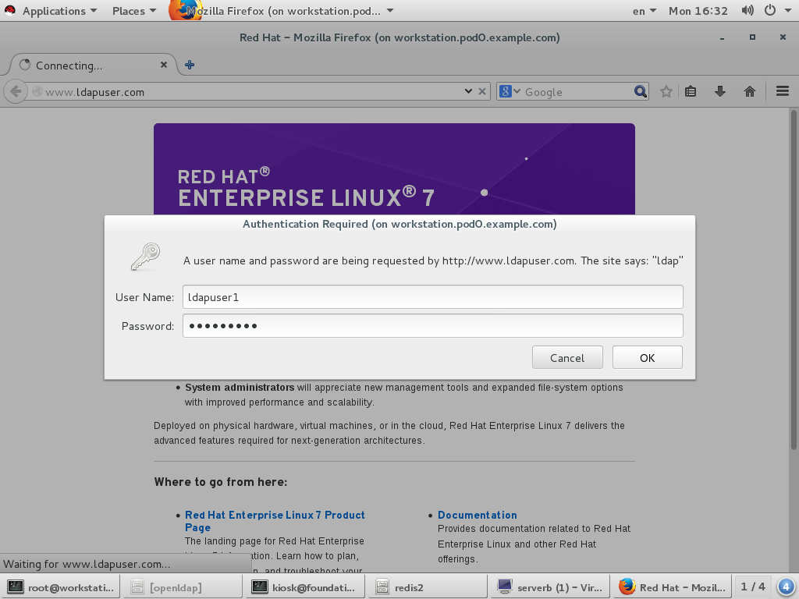
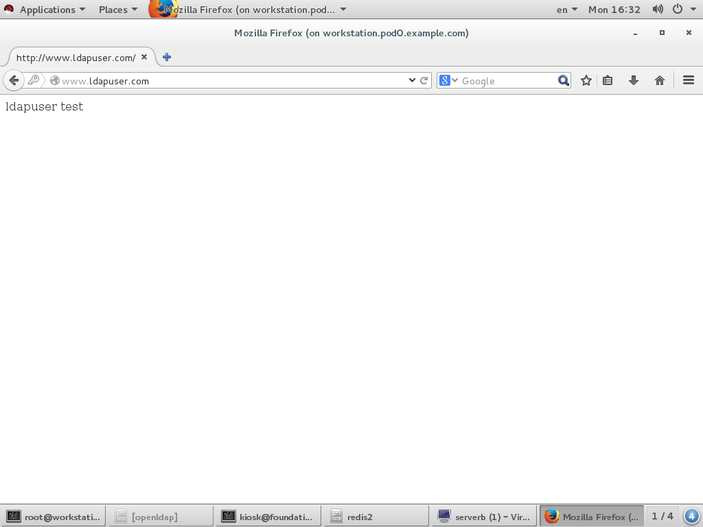
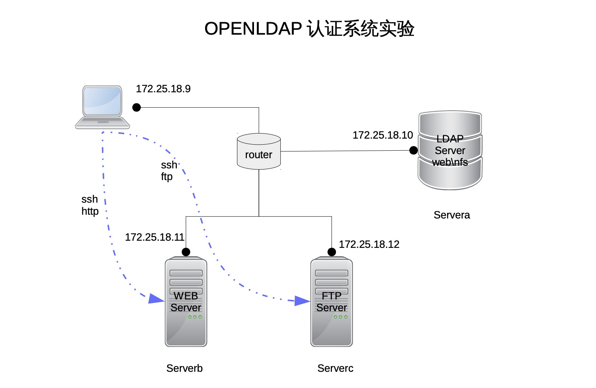

openldap简介 LDAP的全称Lightweight Directory Access Protocol。它是基于X.500标准的， 但是简单多了并且可以根据需要定制。与X.500不同，LDAP支持TCP/IP，这对访Internet是必须的。LDAP可以让运行在几乎所有计算机平台上的所有的应用程序 从LDAP目录中获取信息。提供了一个安全的集中化信息查询服务。LDAP目录中可以存储各种类型的数据：电子邮件地址、 邮件路由信息、人力资源数据、公用密匙、联系人列表，等等。作为系统集成中 的一个重要环节，可以简化员工在企业内部查询信息的步骤，甚至连主要的数据 源都可以放在任何地方。
LDAP对数据的读取做了很多优化，比如优化了数据类型，修改了锁机制，取消了 不必要的函数，取消了回滚机制等等，非常适用于读多写少的环境。如果你有一 些面向查询的服务，那LDAP无疑是一个不错的选择。
LDAP允许你根据需要使用ACI（一般都称为ACL或者访问控制列表）控制对数据读 和写的权限。ACI可以根据谁访问数据、访问什么数据、数据存在什么地方以及其 它对数据进行访问控制。这些都是由LDAP目录服务器完成，非常的安全。
你的数据是不是需要在不同的平台上读取？
你的数据是不是很少发生更改，但是会被频繁的读取？
你的数据是否能存放于一个平面数据库中
如果都为是，那么恭喜，LDAP将是你最好的选择。
LDAP目录以树状的层次结构来存储数据。而不是用表格。正因为这样，我们在查 询时不能用SQL语句了。在这个树型结构上的每个数据节点，我们称之为“条目（Entry）” ，LDAP目录树的最顶部就是根，也就是所谓的”base DN”。为了好记， 我们常用公司的域名做base DN。比如本公司的域名是example.com，则我的base DN为 “dc=example, dc=com” 。在根目录下，要把数据从逻辑上区分开，大多数LDAP目录用OU从逻辑上把数据分开来。OU 表示“Organization Unit”，在X.500协议中 是用来表示公司内部的机构：销售部、财务部，等等。比如我要表示本公司销售 部的经理级人员，我们可以这样表示， “ou=manager,ou=sales,dc=example,dc=com”。 要表示本公司销售部的经理级人员flyer和sky。那么我可以这样写”uid=flyer,ou=manager, ou=sales,dc=example,dc=com”，”uid=sky,ou=manager, ou=sales,dc=example,dc=com”，可以看到这两个员工的条目有很多相同的字段，但最左端的uid是不一样的，以此来保证条目的唯一性，最左的描述又称为RDN。
在LDAP目录数据库中，所有的条目都必须定义objectClass这个属性。每个条目（ LDAP Entry）都要定义自己的Object Classes。Object Class定义了条目的属性 集，包括必有属性（requited attribute）和可选属性（option attribute）。
一个条目的属性是由它所继承的所有Object Classes的属性集合决定的，此外可 以包括LDAP中规定的“操作属性”（操作属性是一种独立于Object Class而存在 的属性，它可以赋给目录中的任意条目）。如果你想添加的属性不在Object Classes定义属性的范畴，也不是LDAP规定的操作属性，那么是不能直接绑定（在 LDAP中，给Entry赋予属性的过程称为绑定）到条目上的，你必须自定义一个含有 你需要的属性的Object Class，而后将此类型赋给条目。 Object Class是可以被 继承的，这使它看上去真的很像Java语言。继承类的对象实例也必须实现父类规 定的必有属性（requited attribute），同时拥有父类规定的可选属性（option attribute）。继承类可以扩展父类的必有属性和可选属性。
LDAP的另一个重要的组成部分就是Schema，Schema定义了LDAP目录所应遵循的结 构和规则，比如一个 objectclass会有哪些属性，这些属性又是什么结构等等。
ldap 术语列表
dn：用于标识条目，由于entry标识应该唯一，所以每个dn应该是唯一的。其中顶层的起始DN称做base dn。dn标识过程中会用到的一些常见的属性字段如下：
cn : commonName 基本名称
sn：surname 姓氏
c：countryName 国家名称
o：organizationName 组织名称
ou：organizationalUnitName 组织单位名称
l：localityName 市名
st：stateOrProvinceName 省或州名
street：streetAddress 住址
更多字段可参考RFC2256
openldap基础配置与操作 安装openldap 相关安装包
包名
作用
openldap
基础依赖包
openldap-clients
客户端常用命令包，查看修改所使用
openldap-servers
服务端主程序包
compat-openldap
ldap兼容库
安装命令
yum install openldap openldap-clients openldap-servers
重要提示 ：请确保 ldap用户对 /var/lib/ldap 目录有读写权限
chown -R ldap.ldap /var/lib/ldap
openldap server相关命令
命令
作用
slapacl
访问控制列表配置命令。
slapadd
通过ldif文件添加条目的命令
slapauth
认证授权相关命令
slappasswd
创建加密密码
slaptest
检查配置文件命令
openldap client相关命令
命令
作用
ldapadd
添加条目命令
ldapdelete
删除条目命令
ldapmodify
修改条目命令
ldappasswd
设置用户密码命令
ldapsearch
查询条目命令
配置openldap ldap配置文件与目录
配置文件
作用
/etc/openldap/ldap.conf
客户端配置文件
/etc/openldap/slapd.d/
服务端配置文件目录
提示：openldap不再使用/etc/openldap/slapd.conf配置文件，它通过/etc/openldap/slapd.d/目录来进行配置，如果你有一个slapd.conf配置文件，可以通过以下命令转换
slaptest -f /etc/openldap/slapd.conf -F /etc/openldap/slapd.d/
全局配置文件
/etc/openldap/slapd.d/cn=config.ldif
主要参数
参数名称
作用
范例
olcAllows
定义启用功能特性，默认值为bind_v2
olcAllows: bind_v2
olcConnMaxPending
定义匿名会话的最大数量 ，默认值100
olcConnMaxPending: 100
olcConnMaxPendingAuth
定义已认证会话的最大数量 ，默认值1000
olcConnMaxPendingAuth: 1000
olcDisallows
定义禁用功能特性
olcDisallows: bind_anon
olcIdleTimeout
定义关闭空闲连接的等待时间
olcIdleTimeout: 180
olcLogFile
定义日志文件
olcLogFile: /var/log/slapd.log
olcReferral
定义一个Refer url地址，的服务器故障时使用
olcReferral: ldap://root.openldap.org
olcWriteTimeout
定义写请求超时
olcWriteTimeout: 180
数据库配置文件
/etc/openldap/slapd.d/cn=config/olcDatabase={1}bdb.ldif
参数名称
作用
范例
olcReadOnly
数据库readonly模式，默认FALSE
olcReadOnly: TRUE
olcRootDN
定义管理员（无访问限制）
olcRootDN: cn=root,dn=example,dn=com
olcRootPW
定义管理员密码
olcRootPW: {SSHA}WczWsyPEnMchFf1GRTweq2q7XJcvmSxD
olcSuffix
定义域名
olcSuffix: dc=example,dc=com
建立安全连接 OpenLDAP的客户端和服务器可以使用Transport Layer Security（TLS）的框架，TLS是一个加密协议。
证书配置相关参数 服务端相关配置文件
/etc/openldap/slapd.d/cn=config.ldif
参数名称
作用
olcTLSCACertificateFile
指定ＣＡ证书文件
olcTLSCACertificatePath
指定ＣＡ文件目录
olcTLSCertificateFile
指定server证书文件
olcTLSCertificateKeyFile
指定私钥文件
启动openldap systemctl start slapd.service
系统用户转换迁移到openldap 安装编辑转换脚本
yum install migrationtools vi /usr/share/migrationtools/migrate_common.ph > > $DEFAULT_MAIL_DOMAIN = "example.com" ;> > $DEFAULT_BASE = "dc=example,dc=com" ;/usr/share/migrationtools/migrate_all_online.sh
openldap认证系统登录用户 环境介绍 总共使用3台虚拟机
主机
作用
servera.pod0.example.com (172.25.0.10/24)
运行openldap服务，提供集中化认证与数据共享服务
serverb.pod0.example.com (172.25.0.11/24)
提供基本用户登录，ssh服务，ftp服务与http服务，所有的用户认证均通过servera来认证
workstation.pod0.example.com (172.25.0.9/24)
client测试端，通过ssh，ftp，http等方式访问serverb。
安装配置openldap 安装opendap [kiosk@foundation0 ~]$ rht-vmctl start servera [kiosk@foundation0 ~]$ ssh root@172.25.0.10 Last login: Sun Aug 9 17:52:00 2015 [root@servera ~]# iptables -F [root@servera ~]# setenforce 0 [root@servera ~]# yum install openldap-clients migrationtools openldap-servers openldap -y Loaded plugins: langpacks rhel_dvd | 4.1 kB 00:00 (1/2): rhel_dvd/group_gz | 134 kB 00:00 (2/2): rhel_dvd/primary_db | 3.4 MB 00:00 Package openldap-2.4.39-6.el7.x86_64 already installed and latest version Resolving Dependencies --> Running transaction check ---> Package migrationtools.noarch 0:47-15.el7 will be installed ---> Package openldap-clients.x86_64 0:2.4.39-6.el7 will be installed ---> Package openldap-servers.x86_64 0:2.4.39-6.el7 will be installed --> Processing Dependency: libltdl.so.7()(64bit) for package: openldap-servers-2.4.39-6.el7.x86_64 --> Running transaction check ---> Package libtool-ltdl.x86_64 0:2.4.2-20.el7 will be installed --> Finished Dependency Resolution Dependencies Resolved ======================================================================== Package Arch Version Repository Size ======================================================================== Installing: migrationtools noarch 47-15.el7 rhel_dvd 26 k openldap-clients x86_64 2.4.39-6.el7 rhel_dvd 184 k openldap-servers x86_64 2.4.39-6.el7 rhel_dvd 2.1 M Installing for dependencies: libtool-ltdl x86_64 2.4.2-20.el7 rhel_dvd 49 k Transaction Summary ======================================================================== Install 3 Packages (+1 Dependent package) Total download size: 2.3 M Installed size: 5.4 M Downloading packages: (1/4): libtool-ltdl-2.4.2-20.el7.x86_64.rpm | 49 kB 00:00 (2/4): migrationtools-47-15.el7.noarch.rpm | 26 kB 00:00 (3/4): openldap-clients-2.4.39-6.el7.x86_64.rpm | 184 kB 00:00 (4/4): openldap-servers-2.4.39-6.el7.x86_64.rpm | 2.1 MB 00:00 ------------------------------------------------------------------------ Total 7.0 MB/s | 2.3 MB 00:00 Running transaction check Running transaction test Transaction test succeeded Running transaction Installing : libtool-ltdl-2.4.2-20.el7.x86_64 1/4 Installing : openldap-servers-2.4.39-6.el7.x86_64 2/4 Installing : migrationtools-47-15.el7.noarch 3/4 Installing : openldap-clients-2.4.39-6.el7.x86_64 4/4 Verifying : libtool-ltdl-2.4.2-20.el7.x86_64 1/4 Verifying : openldap-servers-2.4.39-6.el7.x86_64 2/4 Verifying : migrationtools-47-15.el7.noarch 3/4 Verifying : openldap-clients-2.4.39-6.el7.x86_64 4/4 Installed: migrationtools.noarch 0:47-15.el7 openldap-clients.x86_64 0:2.4.39-6.el7 openldap-servers.x86_64 0:2.4.39-6.el7 Dependency Installed: libtool-ltdl.x86_64 0:2.4.2-20.el7 Complete! [root@servera ~]#
配置启动openldap openldap配置文件存放于/etc/openldap/slapd.d/目录下，你可以直接修改此目录下的文件，由于此文件格式本身并不直观，所以建议先使用旧式的配置文件/etc/openldap/slapd.conf，待配置完成后，再通过格式转换命令转成标准配置文件。
在配置过程中需要定义管理员密码，建议先使用slappasswd命令产生一个密文的密码，再将此密码定义到配置文件中，以提高安全性。实验中全局管理员密码为config
[root@servera ~]# slappasswd New password: Re-enter new password: {SSHA}IeopqaxvZY1/I7HavmzRQ8zEp4vwNjmF
产生旧式的配置文件，并做格式转换
[root@servera ~]# vi /etc/openldap/slapd.conf include /etc/openldap/schema/corba.schema include /etc/openldap/schema/core.schema include /etc/openldap/schema/cosine.schema include /etc/openldap/schema/duaconf.schema include /etc/openldap/schema/dyngroup.schema include /etc/openldap/schema/inetorgperson.schema include /etc/openldap/schema/java.schema include /etc/openldap/schema/misc.schema include /etc/openldap/schema/nis.schema include /etc/openldap/schema/openldap.schema include /etc/openldap/schema/pmi.schema include /etc/openldap/schema/ppolicy.schema include /etc/openldap/schema/collective.schema allow bind_v2 pidfile /var/run/openldap/slapd.pid argsfile /var/run/openldap/slapd.args # TLSCACertificateFile /etc/pki/tls/certs/ca.crt TLSCertificateFile /etc/pki/tls/certs/slapd.crt TLSCertificateKeyFile /etc/pki/tls/certs/slapd.key # database config rootdn "cn=admin,cn=config" rootpw {SSHA}IeopqaxvZY1/I7HavmzRQ8zEp4vwNjmF access to * by dn.exact=gidNumber=0+uidNumber=0,cn=peercred,cn=external,cn=auth manage by * break # database monitor # allow only rootdn to read the monitor access to * by dn.exact="cn=admin,cn=config" read by * none [root@servera ~]# [root@servera ~]# rm -rf /etc/openldap/slapd.d/* [root@servera ~]# slaptest -f /etc/openldap/slapd.conf -F /etc/openldap/slapd.d config file testing succeeded [root@servera ~]# chown -R ldap:ldap /etc/openldap/slapd.d [root@servera ~]# chmod -R 000 /etc/openldap/slapd.d [root@servera ~]# chmod -R u+rwX /etc/openldap/slapd.d
在配置过程中，由于安全需要，启动了相关加密，整个过程中定义
TLSCACertificateFile /etc/pki/tls/certs/ca.crt
我们需要将这些文件创建出来，以便openldap可以使用密文传输。创建证书过程可以通过openssl命令实现，或者直接从服务器上下载证书创建脚本来创建证书。脚本在创建过程中使用的主机名为你当前hostname，如果要修改，可以自行更改脚本。
[root@servera ~]# wget http://172.25.254.254/content/courses/up200/rhel7.1/materials/mkcert.sh --2016-09-18 03:45:24-- http://172.25.254.254/content/courses/up200/rhel7.1/materials/mkcert.sh Connecting to 172.25.254.254:80... connected. HTTP request sent, awaiting response... 200 OK Length: 3454 (3.4K) [application/x-sh] Saving to: ‘mkcert.sh’ 100% [==============================>] 3,454 --.-K/s in 0s 2016-09-18 03:45:24 (355 MB/s) - ‘mkcert.sh’ saved [3454/3454] [root@servera ~]# chmod +x mkcert.sh [root@servera ~]# ./mkcert.sh --create-ca-keys create the keys: my-ca.key,my-ca.crt the keys will save in : /etc/pki/CA/ and /etc/pki/CA/private/ create finished , please check. [root@servera ~]# ./mkcert.sh --create-ldap-keys create the keys: ldap_server.key,ldap_server.crt the keys will save in : /etc/pki/CA/ create finished , please check. [root@servera ~]# ls /etc/pki/CA/ certs index.txt.attr ldap_server.csr newcerts serial.old crl index.txt.old ldap_server.key private index.txt ldap_server.crt my-ca.crt serial [root@servera ~]# cd /etc/pki/CA/ [root@servera CA]# cp my-ca.crt /etc/pki/tls/certs/ca.crt [root@servera CA]# cp ldap_server.key /etc/pki/tls/certs/slapd.key [root@servera CA]# cp ldap_server.crt /etc/pki/tls/certs/slapd.crt [root@servera CA]# cd ~
检查一下配置是否正确
[root@servera ~]# cat /etc/openldap/slapd.d/cn\=config.ldif # AUTO-GENERATED FILE - DO NOT EDIT!! Use ldapmodify. # CRC32 ae3c5fca dn: cn=config objectClass: olcGlobal cn: config olcConfigFile: /etc/openldap/slapd.conf olcConfigDir: /etc/openldap/slapd.d olcAllows: bind_v2 olcArgsFile: /var/run/openldap/slapd.args olcAttributeOptions: lang- olcAuthzPolicy: none olcConcurrency: 0 olcConnMaxPending: 100 olcConnMaxPendingAuth: 1000 olcGentleHUP: FALSE olcIdleTimeout: 0 olcIndexSubstrIfMaxLen: 4 olcIndexSubstrIfMinLen: 2 olcIndexSubstrAnyLen: 4 olcIndexSubstrAnyStep: 2 olcIndexIntLen: 4 olcListenerThreads: 1 olcLocalSSF: 71 olcLogLevel: 0 olcPidFile: /var/run/openldap/slapd.pid olcReadOnly: FALSE olcReverseLookup: FALSE olcSaslSecProps: noplain,noanonymous olcSockbufMaxIncoming: 262143 olcSockbufMaxIncomingAuth: 16777215 olcThreads: 16 olcTLSCACertificateFile: /etc/pki/tls/certs/ca.crt olcTLSCertificateFile: /etc/pki/tls/certs/slapd.crt olcTLSCertificateKeyFile: /etc/pki/tls/certs/slapd.key olcTLSVerifyClient: never olcTLSProtocolMin: 0.0 olcToolThreads: 1 olcWriteTimeout: 0 structuralObjectClass: olcGlobal entryUUID: 76d13f64-1285-1036-8231-1325989af1ca creatorsName: cn=config createTimestamp: 20160919072145Z entryCSN: 20160919072145.074896Z#000000#000#000000 modifiersName: cn=config modifyTimestamp: 20160919072145Z [root@servera ~]# cat /etc/openldap/slapd.d/cn\=config/olcDatabase\=\{0\}config.ldif # AUTO-GENERATED FILE - DO NOT EDIT!! Use ldapmodify. # CRC32 ef81c122 dn: olcDatabase={0}config objectClass: olcDatabaseConfig olcDatabase: {0}config olcAccess: {0}to * by dn.base="gidNumber=0+uidNumber=0,cn=peercred,cn=external,cn=auth" manage by * +0 break olcAddContentAcl: TRUE olcLastMod: TRUE olcMaxDerefDepth: 15 olcReadOnly: FALSE olcRootDN: cn=admin,cn=config olcRootPW:: e1NTSEF9SWVvcHFheHZaWTEvSTdIYXZtelJROHpFcDR2d05qbUY= olcSyncUseSubentry: FALSE olcMonitoring: FALSE structuralObjectClass: olcDatabaseConfig entryUUID: 76daa130-1285-1036-8241-1325989af1ca creatorsName: cn=config createTimestamp: 20160919072145Z entryCSN: 20160919072145.074896Z#000000#000#000000 modifiersName: cn=config modifyTimestamp: 20160919072145Z
可以看到关键性的几个参数已经生效
olcAllows: bind_v2
dn: olcDatabase={0}config by dn.base=”gidNumber=0+uidNumber=0,cn=peercred,cn=externa l,cn=auth” manage by +0 break
再对openldap数据文件做一些基本配置定义就可以启动了。配置文件为DB_CONFIG
[root@servera ~]# rm -rf /var/lib/ldap/* [root@servera ~]# chown ldap.ldap /var/lib/ldap [root@servera ~]# cp -p /usr/share/openldap-servers/DB_CONFIG.example /var/lib/ldap/DB_CONFIG [root@servera ~]# chown ldap. /var/lib/ldap/DB_CONFIG [root@servera ~]# systemctl start slapd.service
创建用户数据库 openldap虽然已经启动，但并没有任何数据，添加数据主要分2步，先做一些定义，然后添加条目。
[root@servera ~]# mkdir ~/ldif [root@servera ~]# vi ~/ldif/bdb.ldif dn: olcDatabase=bdb,cn=config objectClass: olcDatabaseConfig objectClass: olcBdbConfig olcDatabase: {1}bdb olcSuffix: dc=example,dc=org olcDbDirectory: /var/lib/ldap olcRootDN: cn=Manager,dc=example,dc=org olcRootPW: redhat olcLimits: dn.exact="cn=Manager,dc=example,dc=org" time.soft=unlimited time.hard=unlimited size.soft=unlimited size.hard=unlimited olcDbIndex: uid pres,eq olcDbIndex: cn,sn,displayName pres,eq,approx,sub olcDbIndex: uidNumber,gidNumber eq olcDbIndex: memberUid eq olcDbIndex: objectClass eq olcDbIndex: entryUUID pres,eq olcDbIndex: entryCSN pres,eq olcAccess: to attrs=userPassword by self write by anonymous auth by dn.children="ou=admins,dc=example,dc=org" write by * none olcAccess: to * by self write by dn.children="ou=admins,dc=example,dc=org" write by * read [root@servera ~]# ldapsearch -x -b "cn=config" -D "cn=admin,cn=config" -w config -h localhost dn -LLL | grep -v ^$ dn: cn=config dn: cn=schema,cn=config dn: cn={0}corba,cn=schema,cn=config dn: cn={1}core,cn=schema,cn=config dn: cn={2}cosine,cn=schema,cn=config dn: cn={3}duaconf,cn=schema,cn=config dn: cn={4}dyngroup,cn=schema,cn=config dn: cn={5}inetorgperson,cn=schema,cn=config dn: cn={6}java,cn=schema,cn=config dn: cn={7}misc,cn=schema,cn=config dn: cn={8}nis,cn=schema,cn=config dn: cn={9}openldap,cn=schema,cn=config dn: cn={10}pmi,cn=schema,cn=config dn: cn={11}ppolicy,cn=schema,cn=config dn: cn={12}collective,cn=schema,cn=config dn: olcDatabase={-1}frontend,cn=config dn: olcDatabase={0}config,cn=config dn: olcDatabase={1}monitor,cn=config [root@servera ~]# ldapadd -x -D "cn=admin,cn=config" -w config -f ~/ldif/bdb.ldif -h localhost adding new entry "olcDatabase=bdb,cn=config" [root@servera ~]# ldapsearch -x -b "cn=config" -D "cn=admin,cn=config" -w config -h localhost dn -LLL | grep -v ^$ dn: cn=config dn: cn=schema,cn=config dn: cn={0}corba,cn=schema,cn=config dn: cn={1}core,cn=schema,cn=config dn: cn={2}cosine,cn=schema,cn=config dn: cn={3}duaconf,cn=schema,cn=config dn: cn={4}dyngroup,cn=schema,cn=config dn: cn={5}inetorgperson,cn=schema,cn=config dn: cn={6}java,cn=schema,cn=config dn: cn={7}misc,cn=schema,cn=config dn: cn={8}nis,cn=schema,cn=config dn: cn={9}openldap,cn=schema,cn=config dn: cn={10}pmi,cn=schema,cn=config dn: cn={11}ppolicy,cn=schema,cn=config dn: cn={12}collective,cn=schema,cn=config dn: olcDatabase={-1}frontend,cn=config dn: olcDatabase={0}config,cn=config dn: olcDatabase={1}monitor,cn=config dn: olcDatabase={2}bdb,cn=config
可以看到第二次查询的时候，我们看到了自己定义的bdb
dn: olcDatabase={2}bdb,cn=config
检查bdb配置
[root@servera ~]# cat /etc/openldap/slapd.d/cn\=config/olcDatabase\=\{2\}bdb.ldif # AUTO-GENERATED FILE - DO NOT EDIT!! Use ldapmodify. # CRC32 24749b9f dn: olcDatabase={2}bdb objectClass: olcDatabaseConfig objectClass: olcBdbConfig olcDatabase: {2}bdb olcDbDirectory: /var/lib/ldap olcSuffix: dc=example,dc=org olcAccess: {0}to attrs=userPassword by self write by anonymous auth by dn.chil dren="ou=admins,dc=example,dc=org" write by * none olcAccess: {1}to * by self write by dn.children="ou=admins,dc=example,dc=org" write by * read olcLimits: {0}dn.exact="cn=Manager,dc=example,dc=org" time.soft=unlimited time .hard=unlimited size.soft=unlimited size.hard=unlimited olcRootDN: cn=Manager,dc=example,dc=org olcRootPW:: cmVkaGF0 olcDbIndex: uid pres,eq olcDbIndex: cn,sn,displayName pres,eq,approx,sub olcDbIndex: uidNumber,gidNumber eq olcDbIndex: memberUid eq olcDbIndex: objectClass eq olcDbIndex: entryUUID pres,eq olcDbIndex: entryCSN pres,eq structuralObjectClass: olcBdbConfig entryUUID: bf8176ac-1285-1036-9b37-e346a96f1369 creatorsName: cn=admin,cn=config createTimestamp: 20160919072347Z entryCSN: 20160919072347.025734Z#000000#000#000000 modifiersName: cn=admin,cn=config modifyTimestamp: 20160919072347Z
生效的关键性参数
dn: olcDatabase={2}bdb
添加用户条目过程中，本身条目格式定义比较麻烦，所以我通过ldap转换脚本来实现将系统用户转换成ldap用户。
[root@servera ~]# cd /usr/share/migrationtools/ [root@servera migrationtools]# vi /usr/share/migrationtools/migrate_common.ph # Default DNS domain $ DEFAULT_MAIL_DOMAIN = "example.org" ; # Default base $ DEFAULT_BASE = "dc=example,dc=org" ; [root@servera migrationtools]# mkdir /ldapuser [root@servera migrationtools]# groupadd ldapuser1 -g 100001 [root@servera migrationtools]# useradd ldapuser1 -u 100001 -g 100001 -d /ldapuser/ldapuser1 [root@servera migrationtools]# groupadd ldapuser2 -g 100002 [root@servera migrationtools]# useradd ldapuser2 -u 100002 -g 100002 -d /ldapuser/ldapuser2 [root@servera migrationtools]# echo uplooking | passwd ldapuser1 --stdin Changing password for user ldapuser1. passwd: all authentication tokens updated successfully. [root@servera migrationtools]# echo uplooking | passwd ldapuser2 --stdin Changing password for user ldapuser2. passwd: all authentication tokens updated successfully. [root@servera migrationtools]# ./migrate_base.pl > ~/ldif/base.ldif [root@servera migrationtools]# ./migrate_passwd.pl /etc/passwd > ~/ldif/passwd.ldif [root@servera migrationtools]# ./migrate_group.pl /etc/group > ~/ldif/group.ldif [root@servera migrationtools]# cd
通过ldap的转换脚本，已经将所有系统中的用户转换成了ldap语法格式，总共有3个ldap文件
~/ldif/base.ldif
这3个文件中并非所有的内容都需要，我们实验过程中只需要将ldapuser1与ldapuser2添加到ldap用户数据库中，所以修改这3个文件，将不需要的内容删除，确保这3个文件的内容如下：
[root@servera ~]# vi ldif/base.ldif dn: dc=example,dc=org dc: example objectClass: top objectClass: domain dn: ou=People,dc=example,dc=org ou: People objectClass: top objectClass: organizationalUnit dn: ou=Group,dc=example,dc=org ou: Group objectClass: top objectClass: organizationalUnit [root@servera ~]# vi ldif/passwd.ldif dn: uid=ldapuser1,ou=People,dc=example,dc=org uid: ldapuser1 cn: ldapuser1 objectClass: account objectClass: posixAccount objectClass: top objectClass: shadowAccount userPassword: {crypt}$6$bnRPbjMr$zA/LqFk9TSNMjQohKQ24l5pccMDD/kr0yO6gxXd8jbC3AVwGQ3WJqWNThjNpNZ3irAVM9pBIb.k.JakDCbPQa/ shadowLastChange: 17063 shadowMin: 0 shadowMax: 99999 shadowWarning: 7 loginShell: /bin/bash uidNumber: 100001 gidNumber: 100001 homeDirectory: /ldapuser/ldapuser1 dn: uid=ldapuser2,ou=People,dc=example,dc=org uid: ldapuser2 cn: ldapuser2 objectClass: account objectClass: posixAccount objectClass: top objectClass: shadowAccount userPassword: {crypt}$6$6rpvFntm$dVBVcMmLFDnvREB9rTBx83mGXvId7whrOBvnWWdQH0mqkTbshTu23oiVlXw7yGxgakNTSl/5/5E.V570oA7qV0 shadowLastChange: 17063 shadowMin: 0 shadowMax: 99999 shadowWarning: 7 loginShell: /bin/bash uidNumber: 100002 gidNumber: 100002 homeDirectory: /ldapuser/ldapuser2 [root@servera ~]# vi ldif/group.ldif dn: cn=ldapuser1,ou=Group,dc=example,dc=org objectClass: posixGroup objectClass: top cn: ldapuser1 userPassword: {crypt}x gidNumber: 100001 dn: cn=ldapuser2,ou=Group,dc=example,dc=org objectClass: posixGroup objectClass: top cn: ldapuser2 userPassword: {crypt}x gidNumber: 100002 [root@servera ~]#
重要：ldif文件的格式要求非常，非常的严格，一定要注意空白行不能少了。
[root@servera ~]# ldapadd -x -D "cn=Manager,dc=example,dc=org" -w redhat -h localhost -f ~/ldif/base.ldif adding new entry "dc=example,dc=org" adding new entry "ou=People,dc=example,dc=org" adding new entry "ou=Group,dc=example,dc=org" [root@servera ~]# ldapadd -x -D "cn=Manager,dc=example,dc=org" -w redhat -h localhost -f ~/ldif/passwd.ldif adding new entry "uid=ldapuser1,ou=People,dc=example,dc=org" adding new entry "uid=ldapuser2,ou=People,dc=example,dc=org" [root@servera ~]# ldapadd -x -D "cn=Manager,dc=example,dc=org" -w redhat -h localhost -f ~/ldif/group.ldif adding new entry "cn=ldapuser1,ou=Group,dc=example,dc=org" adding new entry "cn=ldapuser2,ou=Group,dc=example,dc=org"
在测试认证过程中，serverb主机需要用到ca.crt文件 ，与用户家目录，所以通过http方式共享出ca.crt文件，通过nfs方式共享出用户家目录。
[root@servera ~]# yum install httpd -y Loaded plugins: langpacks Resolving Dependencies --> Running transaction check ---> Package httpd.x86_64 0:2.4.6-31.el7 will be installed --> Processing Dependency: httpd-tools = 2.4.6-31.el7 for package: httpd-2.4.6-31.el7.x86_64 --> Processing Dependency: /etc/mime.types for package: httpd-2.4.6-31.el7.x86_64 --> Processing Dependency: libapr-1.so.0()(64bit) for package: httpd-2.4.6-31.el7.x86_64 --> Processing Dependency: libaprutil-1.so.0()(64bit) for package: httpd-2.4.6-31.el7.x86_64 --> Running transaction check ---> Package apr.x86_64 0:1.4.8-3.el7 will be installed ---> Package apr-util.x86_64 0:1.5.2-6.el7 will be installed ---> Package httpd-tools.x86_64 0:2.4.6-31.el7 will be installed ---> Package mailcap.noarch 0:2.1.41-2.el7 will be installed --> Finished Dependency Resolution Dependencies Resolved ======================================================================== Package Arch Version Repository Size ======================================================================== Installing: httpd x86_64 2.4.6-31.el7 rhel_dvd 1.2 M Installing for dependencies: apr x86_64 1.4.8-3.el7 rhel_dvd 103 k apr-util x86_64 1.5.2-6.el7 rhel_dvd 92 k httpd-tools x86_64 2.4.6-31.el7 rhel_dvd 79 k mailcap noarch 2.1.41-2.el7 rhel_dvd 31 k Transaction Summary ======================================================================== Install 1 Package (+4 Dependent packages) Total download size: 1.5 M Installed size: 4.3 M Downloading packages: (1/5): apr-1.4.8-3.el7.x86_64.rpm | 103 kB 00:00 (2/5): httpd-2.4.6-31.el7.x86_64.rpm | 1.2 MB 00:00 (3/5): apr-util-1.5.2-6.el7.x86_64.rpm | 92 kB 00:00 (4/5): httpd-tools-2.4.6-31.el7.x86_64.rpm | 79 kB 00:00 (5/5): mailcap-2.1.41-2.el7.noarch.rpm | 31 kB 00:00 ------------------------------------------------------------------------ Total 5.3 MB/s | 1.5 MB 00:00 Running transaction check Running transaction test Transaction test succeeded Running transaction Installing : apr-1.4.8-3.el7.x86_64 1/5 Installing : apr-util-1.5.2-6.el7.x86_64 2/5 Installing : httpd-tools-2.4.6-31.el7.x86_64 3/5 Installing : mailcap-2.1.41-2.el7.noarch 4/5 Installing : httpd-2.4.6-31.el7.x86_64 5/5 Verifying : mailcap-2.1.41-2.el7.noarch 1/5 Verifying : httpd-2.4.6-31.el7.x86_64 2/5 Verifying : apr-1.4.8-3.el7.x86_64 3/5 Verifying : apr-util-1.5.2-6.el7.x86_64 4/5 Verifying : httpd-tools-2.4.6-31.el7.x86_64 5/5 Installed: httpd.x86_64 0:2.4.6-31.el7 Dependency Installed: apr.x86_64 0:1.4.8-3.el7 apr-util.x86_64 0:1.5.2-6.el7 httpd-tools.x86_64 0:2.4.6-31.el7 mailcap.noarch 0:2.1.41-2.el7 Complete! [root@servera ~]# [root@servera ~]# cp /etc/pki/tls/certs/ca.crt /var/www/html/ [root@servera ~]# systemctl start httpd [root@servera ~]# vi /etc/exports /ldapuser 172.25.0.0/24(rw,async) [root@servera ~]# systemctl start nfs
配置serverb使用ldap认证 [kiosk@foundation0 Desktop]$ rht-vmctl start serverb Starting serverb. [kiosk@foundation0 Desktop]$ ssh root@172.25.0.11 Last login: Sun Sep 18 04:03:47 2016 from 172.25.0.250 [root@serverb ~]# setenforce 0 [root@serverb ~]# yum install openldap openldap-clients nss-pam-ldapd -y Loaded plugins: langpacks Package openldap-2.4.39-6.el7.x86_64 already installed and latest version Resolving Dependencies --> Running transaction check ---> Package nss-pam-ldapd.x86_64 0:0.8.13-8.el7 will be installed --> Processing Dependency: nscd for package: nss-pam-ldapd-0.8.13-8.el7.x86_64 ---> Package openldap-clients.x86_64 0:2.4.39-6.el7 will be installed --> Running transaction check ---> Package nscd.x86_64 0:2.17-78.el7 will be installed --> Finished Dependency Resolution Dependencies Resolved ======================================================================== Package Arch Version Repository Size ======================================================================== Installing: nss-pam-ldapd x86_64 0.8.13-8.el7 rhel_dvd 159 k openldap-clients x86_64 2.4.39-6.el7 rhel_dvd 184 k Installing for dependencies: nscd x86_64 2.17-78.el7 rhel_dvd 255 k Transaction Summary ======================================================================== Install 2 Packages (+1 Dependent package) Total download size: 597 k Installed size: 1.1 M Downloading packages: (1/3): nscd-2.17-78.el7.x86_64.rpm | 255 kB 00:00 (2/3): openldap-clients-2.4.39-6.el7.x86_64.rpm | 184 kB 00:00 (3/3): nss-pam-ldapd-0.8.13-8.el7.x86_64.rpm | 159 kB 00:00 ------------------------------------------------------------------------ Total 2.0 MB/s | 597 kB 00:00 Running transaction check Running transaction test Transaction test succeeded Running transaction Installing : nscd-2.17-78.el7.x86_64 1/3 Installing : nss-pam-ldapd-0.8.13-8.el7.x86_64 2/3 Installing : openldap-clients-2.4.39-6.el7.x86_64 3/3 Verifying : nss-pam-ldapd-0.8.13-8.el7.x86_64 1/3 Verifying : nscd-2.17-78.el7.x86_64 2/3 Verifying : openldap-clients-2.4.39-6.el7.x86_64 3/3 Installed: nss-pam-ldapd.x86_64 0:0.8.13-8.el7 openldap-clients.x86_64 0:2.4.39-6.el7 Dependency Installed: nscd.x86_64 0:2.17-78.el7 Complete! [root@serverb ~]# id ldapuser1 id: ldapuser1: no such user [root@serverb ~]# authconfig --enableldap --enableldapauth --ldapserver=servera.pod0.example.com --ldapbasedn="dc=example,dc=org" --enableldaptls --ldaploadcacert=http://servera.pod0.example.com/ca.crt --update [root@serverb ~]# id ldapuser1 uid=1001(ldapuser1) gid=1001(ldapuser1) groups=1001(ldapuser1)
目前只能通过验证，如果真使用ldapuser1用户登录，会发现在serverb上并没有用户家目录，所以需要将servera的ldapuser1…用户安目录挂接到serverb。挂接方式有2种，一种是写/etc/fstab文件的开机过程中自动挂接，另一种是使用autofs。推荐使用autofs。
[root@serverb ~]# su - ldapuser1 su: warning: cannot change directory to /ldapuser/ldapuser1: No such file or directory -bash-4.2$ -bash-4.2$ exit logout [root@serverb ~]# yum install autofs -y Loaded plugins: langpacks Resolving Dependencies --> Running transaction check ---> Package autofs.x86_64 1:5.0.7-48.el7 will be installed --> Processing Dependency: libhesiod.so.0()(64bit) for package: 1:autofs-5.0.7-48.el7.x86_64 --> Running transaction check ---> Package hesiod.x86_64 0:3.2.1-3.el7 will be installed --> Finished Dependency Resolution Dependencies Resolved ======================================================================== Package Arch Version Repository Size ======================================================================== Installing: autofs x86_64 1:5.0.7-48.el7 rhel_dvd 789 k Installing for dependencies: hesiod x86_64 3.2.1-3.el7 rhel_dvd 30 k Transaction Summary ======================================================================== Install 1 Package (+1 Dependent package) Total download size: 819 k Installed size: 5.1 M Downloading packages: (1/2): autofs-5.0.7-48.el7.x86_64.rpm | 789 kB 00:00 (2/2): hesiod-3.2.1-3.el7.x86_64.rpm | 30 kB 00:00 ------------------------------------------------------------------------ Total 2.9 MB/s | 819 kB 00:00 Running transaction check Running transaction test Transaction test succeeded Running transaction Installing : hesiod-3.2.1-3.el7.x86_64 1/2 Installing : 1:autofs-5.0.7-48.el7.x86_64 2/2 Verifying : hesiod-3.2.1-3.el7.x86_64 1/2 Verifying : 1:autofs-5.0.7-48.el7.x86_64 2/2 Installed: autofs.x86_64 1:5.0.7-48.el7 Dependency Installed: hesiod.x86_64 0:3.2.1-3.el7 Complete! [root@serverb ~]# vi /etc/auto.master [root@serverb ~]# echo '/ldapuser /etc/auto.ldapuser' >> /etc/auto.master [root@serverb ~]# echo '* -rw,soft,intr servera.pod0.example.com:/ldapuser/&' > /etc/auto.ldapuser [root@serverb ~]# ls / bin dev home lib64 mnt proc run srv tmp var boot etc lib media opt root sbin sys usr [root@serverb ~]# systemctl start autofs [root@serverb ~]# ls / bin dev home lib media mnt opt root sbin sys usr boot etc ldapuser lib64 misc net proc run srv tmp var [root@serverb ~]# su - ldapuser1 Last login: Mon Sep 19 03:35:19 EDT 2016 on pts/0 [ldapuser1@serverb ~]$ exit logout [root@serverb ~]# mount | grep ldapuser1 servera.pod0.example.com:/ldapuser/ldapuser1 on /ldapuser/ldapuser1 type nfs4 (ro,relatime,vers=4.0,rsize=65536,wsize=65536,namlen=255,soft,proto=tcp,port=0,timeo=600,retrans=2,sec=sys,clientaddr=172.25.0.11,local_lock=none,addr=172.25.0.10)
serverb上使用tty登录测试
workstation使用ssh测试 [kiosk@foundation0 ~]$ rht-vmctl start workstation Starting workstation. [kiosk@foundation0 ~]$ ssh root@172.25.0.9 Last login: Sun Aug 9 17:45:12 2015 [root@workstation ~]# ssh ldapuser1@172.25.0.11 The authenticity of host '172.25.0.11 (172.25.0.11)' can't be established. ECDSA key fingerprint is 0b:1f:3b:13:2e:d2:10:53:4c:3d:c8:f4:86:24:d3:5e. Are you sure you want to continue connecting (yes/no)? yes Warning: Permanently added '172.25.0.11' (ECDSA) to the list of known hosts. ldapuser1@172.25.0.11's password: Last login: Mon Sep 19 03:48:08 2016 from 172.25.0.250 [ldapuser1@serverb ~]$ exit logout Connection to 172.25.0.11 closed.
openldap认证ftp登录用户 serverb安装启动vsftpd
[root@serverb ~]# yum install vsftpd -y Loaded plugins: langpacks Resolving Dependencies --> Running transaction check ---> Package vsftpd.x86_64 0:3.0.2-9.el7 will be installed --> Finished Dependency Resolution Dependencies Resolved ======================================================================== Package Arch Version Repository Size ======================================================================== Installing: vsftpd x86_64 3.0.2-9.el7 rhel_dvd 166 k Transaction Summary ======================================================================== Install 1 Package Total download size: 166 k Installed size: 343 k Downloading packages: vsftpd-3.0.2-9.el7.x86_64.rpm | 166 kB 00:00 Running transaction check Running transaction test Transaction test succeeded Running transaction Installing : vsftpd-3.0.2-9.el7.x86_64 1/1 Verifying : vsftpd-3.0.2-9.el7.x86_64 1/1 Installed: vsftpd.x86_64 0:3.0.2-9.el7 Complete! [root@serverb ~]# systemctl start vsftpd
workstation测试
[root@workstation ~]# yum install lftp -y Loaded plugins: langpacks rhel_dvd | 4.1 kB 00:00:00 (1/2): rhel_dvd/group_gz | 134 kB 00:00:00 (2/2): rhel_dvd/primary_db | 3.4 MB 00:00:00 Resolving Dependencies --> Running transaction check ---> Package lftp.x86_64 0:4.4.8-3.el7 will be installed --> Finished Dependency Resolution Dependencies Resolved =========================================================================================== Package Arch Version Repository Size =========================================================================================== Installing: lftp x86_64 4.4.8-3.el7 rhel_dvd 749 k Transaction Summary =========================================================================================== Install 1 Package Total download size: 749 k Installed size: 2.4 M Downloading packages: lftp-4.4.8-3.el7.x86_64.rpm | 749 kB 00:00:00 Running transaction check Running transaction test Transaction test succeeded Running transaction Installing : lftp-4.4.8-3.el7.x86_64 1/1 Verifying : lftp-4.4.8-3.el7.x86_64 1/1 Installed: lftp.x86_64 0:4.4.8-3.el7 Complete! [root@workstation ~]# lftp ldapuser1@172.25.0.11 Password: lftp ldapuser1@172.25.0.11:~> ls -a drwx------ 2 100001 100001 59 Sep 19 07:24 . drwxr-xr-x 3 0 0 0 Sep 19 07:42 .. -rw-r--r-- 1 100001 100001 18 Jan 11 2015 .bash_logout -rw-r--r-- 1 100001 100001 193 Jan 11 2015 .bash_profile -rw-r--r-- 1 100001 100001 231 Jan 11 2015 .bashrc lftp ldapuser1@172.25.0.11:~> put anaconda-ks.cfg 9462 bytes transferred lftp ldapuser1@172.25.0.11:~> ls -a drwx------ 2 100001 100001 81 Sep 19 07:56 . drwxr-xr-x 3 0 0 0 Sep 19 07:56 .. -rw-r--r-- 1 100001 100001 18 Jan 11 2015 .bash_logout -rw-r--r-- 1 100001 100001 193 Jan 11 2015 .bash_profile -rw-r--r-- 1 100001 100001 231 Jan 11 2015 .bashrc -rw-r--r-- 1 100001 100001 9462 Sep 19 07:56 anaconda-ks.cfg lftp ldapuser1@172.25.0.11:~> exit [root@workstation ~]#
openldap认证apache登录用户 serverb安装配置apache
[root@serverb ~]# yum install wget -y Loaded plugins: langpacks Package wget-1.14-10.el7_0.1.x86_64 already installed and latest version Nothing to do [root@serverb ~]# yum install wget -y Loaded plugins: langpacks Package wget-1.14-10.el7_0.1.x86_64 already installed and latest version Nothing to do [root@serverb ~]# rpm -e wget [root@serverb ~]# yum install wget -y Loaded plugins: langpacks Resolving Dependencies --> Running transaction check ---> Package wget.x86_64 0:1.14-10.el7_0.1 will be installed --> Finished Dependency Resolution Dependencies Resolved ======================================================================== Package Arch Version Repository Size ======================================================================== Installing: wget x86_64 1.14-10.el7_0.1 rhel_dvd 546 k Transaction Summary ======================================================================== Install 1 Package Total download size: 546 k Installed size: 2.0 M Downloading packages: wget-1.14-10.el7_0.1.x86_64.rpm | 546 kB 00:00 Running transaction check Running transaction test Transaction test succeeded Running transaction Warning: RPMDB altered outside of yum. Installing : wget-1.14-10.el7_0.1.x86_64 1/1 Verifying : wget-1.14-10.el7_0.1.x86_64 1/1 Installed: wget.x86_64 0:1.14-10.el7_0.1 Complete! [root@serverb ~]# yum install httpd -y Loaded plugins: langpacks Resolving Dependencies --> Running transaction check ---> Package httpd.x86_64 0:2.4.6-31.el7 will be installed --> Processing Dependency: httpd-tools = 2.4.6-31.el7 for package: httpd-2.4.6-31.el7.x86_64 --> Processing Dependency: /etc/mime.types for package: httpd-2.4.6-31.el7.x86_64 --> Processing Dependency: libapr-1.so.0()(64bit) for package: httpd-2.4.6-31.el7.x86_64 --> Processing Dependency: libaprutil-1.so.0()(64bit) for package: httpd-2.4.6-31.el7.x86_64 --> Running transaction check ---> Package apr.x86_64 0:1.4.8-3.el7 will be installed ---> Package apr-util.x86_64 0:1.5.2-6.el7 will be installed ---> Package httpd-tools.x86_64 0:2.4.6-31.el7 will be installed ---> Package mailcap.noarch 0:2.1.41-2.el7 will be installed --> Finished Dependency Resolution Dependencies Resolved ======================================================================== Package Arch Version Repository Size ======================================================================== Installing: httpd x86_64 2.4.6-31.el7 rhel_dvd 1.2 M Installing for dependencies: apr x86_64 1.4.8-3.el7 rhel_dvd 103 k apr-util x86_64 1.5.2-6.el7 rhel_dvd 92 k httpd-tools x86_64 2.4.6-31.el7 rhel_dvd 79 k mailcap noarch 2.1.41-2.el7 rhel_dvd 31 k Transaction Summary ======================================================================== Install 1 Package (+4 Dependent packages) Total download size: 1.5 M Installed size: 4.3 M Downloading packages: (1/5): apr-1.4.8-3.el7.x86_64.rpm | 103 kB 00:00 (2/5): apr-util-1.5.2-6.el7.x86_64.rpm | 92 kB 00:00 (3/5): httpd-2.4.6-31.el7.x86_64.rpm | 1.2 MB 00:00 (4/5): httpd-tools-2.4.6-31.el7.x86_64.rpm | 79 kB 00:00 (5/5): mailcap-2.1.41-2.el7.noarch.rpm | 31 kB 00:00 ------------------------------------------------------------------------ Total 5.2 MB/s | 1.5 MB 00:00 Running transaction check Running transaction test Transaction test succeeded Running transaction Installing : apr-1.4.8-3.el7.x86_64 1/5 Installing : apr-util-1.5.2-6.el7.x86_64 2/5 Installing : httpd-tools-2.4.6-31.el7.x86_64 3/5 Installing : mailcap-2.1.41-2.el7.noarch 4/5 Installing : httpd-2.4.6-31.el7.x86_64 5/5 Verifying : mailcap-2.1.41-2.el7.noarch 1/5 Verifying : httpd-2.4.6-31.el7.x86_64 2/5 Verifying : apr-1.4.8-3.el7.x86_64 3/5 Verifying : apr-util-1.5.2-6.el7.x86_64 4/5 Verifying : httpd-tools-2.4.6-31.el7.x86_64 5/5 Installed: httpd.x86_64 0:2.4.6-31.el7 Dependency Installed: apr.x86_64 0:1.4.8-3.el7 apr-util.x86_64 0:1.5.2-6.el7 httpd-tools.x86_64 0:2.4.6-31.el7 mailcap.noarch 0:2.1.41-2.el7 Complete! [root@serverb ~]# wget http://172.25.254.254/content/courses/up200/rhel7.1/materials/mod_ldap_httpd.repo -O /etc/yum.repos.d/mod_ldap_httpd.repo --2016-09-19 04:22:27-- http://172.25.254.254/content/courses/up200/rhel7.1/materials/mod_ldap_httpd.repo Connecting to 172.25.254.254:80... connected. HTTP request sent, awaiting response... 200 OK Length: 136 Saving to: ‘/etc/yum.repos.d/mod_ldap_httpd.repo’ 100% [==============================>] 136 --.-K/s in 0s 2016-09-19 04:22:27 (14.3 MB/s) - ‘/etc/yum.repos.d/mod_ldap_httpd.repo’ saved [136/136] ot@serverb ~]# yum makecache Loaded plugins: langpacks mod_ldap_httpd | 2.9 kB 00:00 rhel_dvd | 4.1 kB 00:00 (1/5): mod_ldap_httpd/primary_db | 2.4 kB 00:00 (2/5): mod_ldap_httpd/filelists_db | 950 B 00:00 (3/5): mod_ldap_httpd/other_db | 2.2 kB 00:00 (4/5): rhel_dvd/filelists_db | 3.1 MB 00:00 (5/5): rhel_dvd/other_db | 1.3 MB 00:00 Metadata Cache Created [root@serverb ~]# yum install mod_ldap -y Loaded plugins: langpacks Resolving Dependencies --> Running transaction check ---> Package mod_ldap.x86_64 0:2.4.6-31.el7 will be installed --> Processing Dependency: apr-util-ldap for package: mod_ldap-2.4.6-31.el7.x86_64 --> Running transaction check ---> Package apr-util-ldap.x86_64 0:1.5.2-6.el7 will be installed --> Finished Dependency Resolution Dependencies Resolved ======================================================================== Package Arch Version Repository Size ======================================================================== Installing: mod_ldap x86_64 2.4.6-31.el7 mod_ldap_httpd 58 k Installing for dependencies: apr-util-ldap x86_64 1.5.2-6.el7 mod_ldap_httpd 17 k Transaction Summary ======================================================================== Install 1 Package (+1 Dependent package) Total download size: 76 k Installed size: 134 k Downloading packages: (1/2): apr-util-ldap-1.5.2-6.el7.x86_64.rpm | 17 kB 00:00 (2/2): mod_ldap-2.4.6-31.el7.x86_64.rpm | 58 kB 00:00 ------------------------------------------------------------------------ Total 570 kB/s | 76 kB 00:00 Running transaction check Running transaction test Transaction test succeeded Running transaction Installing : apr-util-ldap-1.5.2-6.el7.x86_64 1/2 Installing : mod_ldap-2.4.6-31.el7.x86_64 2/2 Verifying : mod_ldap-2.4.6-31.el7.x86_64 1/2 Verifying : apr-util-ldap-1.5.2-6.el7.x86_64 2/2 Installed: mod_ldap.x86_64 0:2.4.6-31.el7 Dependency Installed: apr-util-ldap.x86_64 0:1.5.2-6.el7 Complete! [root@serverb ~]# wget http://servera.pod0.example.com/ca.crt -O /etc/httpd/ca.crt --2016-09-19 04:13:39-- http://servera.pod0.example.com/ca.crt Resolving servera.pod0.example.com (servera.pod0.example.com)... 172.25.0.10 Connecting to servera.pod0.example.com (servera.pod0.example.com)|172.25.0.10|:80... connected. HTTP request sent, awaiting response... 200 OK Length: 1476 (1.4K) Saving to: ‘/etc/httpd/ca.crt’ 100% [==============================>] 1,476 --.-K/s in 0s 2016-09-19 04:13:39 (231 MB/s) - ‘/etc/httpd/ca.crt’ saved [1476/1476] [root@serverb ~]# vi /etc/httpd/conf.d/www.ldapuser.com.conf LDAPTrustedGlobalCert CA_BASE64 /etc/httpd/ca.crt <VirtualHost *:80> ServerName www.ldapuser.com DocumentRoot /var/www/ldapuser.com <Directory "/var/www/ldapuser.com"> AuthName ldap AuthType basic AuthBasicProvider ldap AuthLDAPUrl "ldap://servera.pod0.example.com/dc=example,dc=org" TLS Require valid-user </Directory> </VirtualHost> [root@serverb ~]# mkdir /var/www/ldapuser.com [root@serverb ~]# echo ldapuser test > /var/www/ldapuser.com/index.html [root@serverb ~]# systemctl start httpd
workstation登录测试



OpenLDAP 实验 